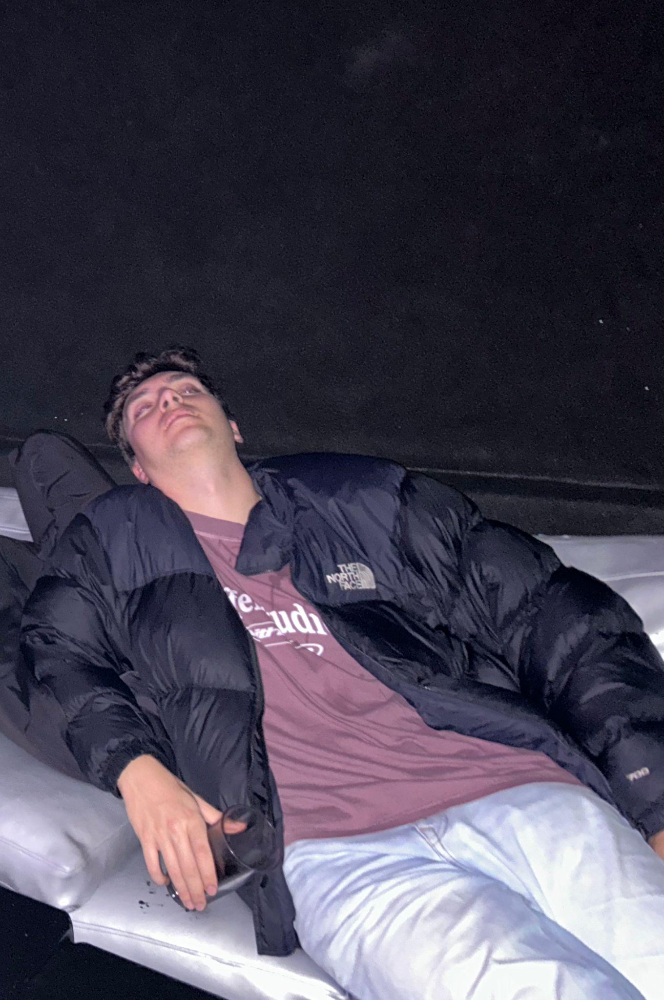
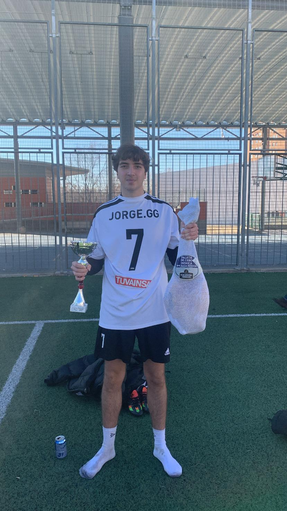
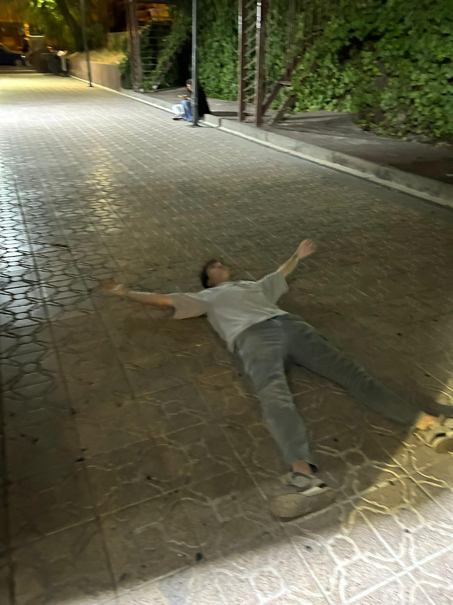
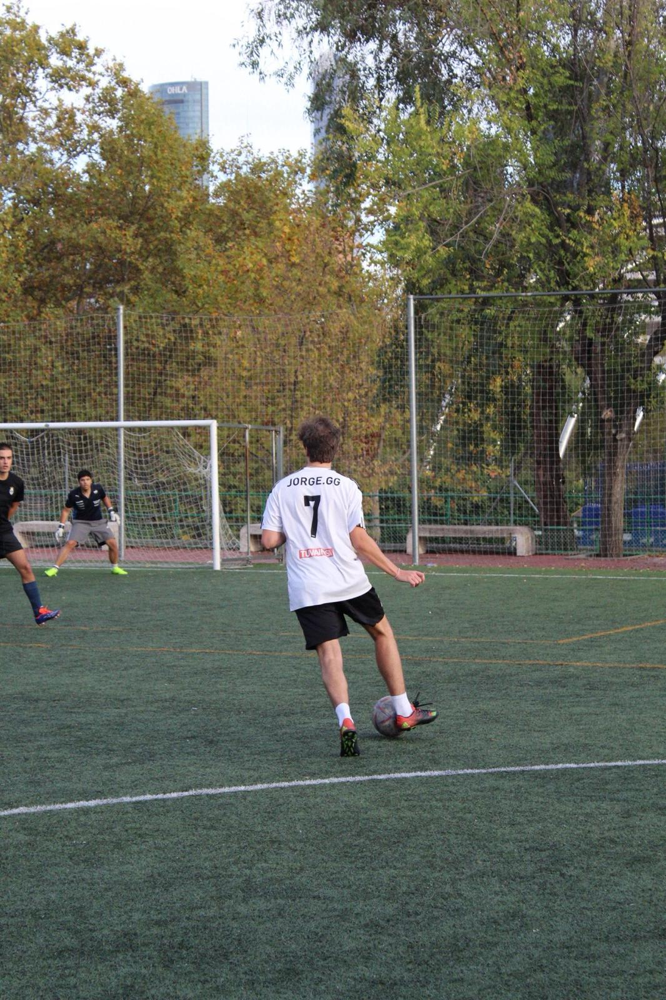
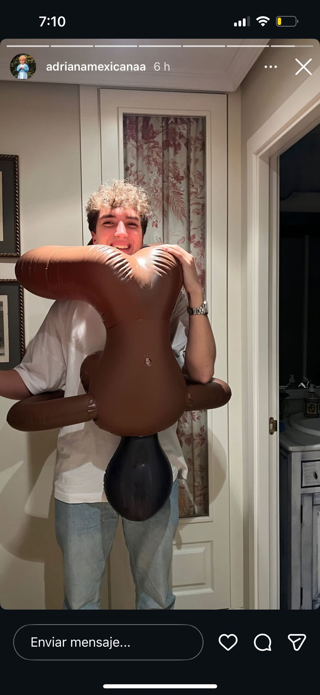

Jorge
Medio | Dorsal 7
Puro cholismo dentro y fuera del campo. Es la definición de jugador regular, pero literalmente. Si
buscas un perfil que tenga buen control, rápido y vaya bien de cabeza, sigue buscando que este
jugador no lo es.
No tiene ninguna característica futbolística que le haga destacar, pero eso es lo que le hace único. Tenía más skills cuando tenía 5 años que las que tiene ahora. No le des un balón al pie, pero dale una litrona en la mano y te hace magia.
Es el “7” del skynna, pero lo único que tiene de extremo es su tolerancia al alcohol. Si falla uno de cada dos pases no le culpes a él, culpa a la birra por estar tan buena. Juega de todocampista, está en todos lados y a la vez en ninguno, además tiene la increíble capacidad de poner los córners donde pone el ojo, pero aún no tiene gafas.
Sin embargo es capaz de jugar gran parte del partido, y que la afición no pueda recordar ninguna jugada suya.
Aparece una vez cada 15 partidos para hacer una actuación espectacular y desaparece unos meses. Jugador único donde los haya, irremplazable en el esquema de juego del skynna
No tiene ninguna característica futbolística que le haga destacar, pero eso es lo que le hace único. Tenía más skills cuando tenía 5 años que las que tiene ahora. No le des un balón al pie, pero dale una litrona en la mano y te hace magia.
Es el “7” del skynna, pero lo único que tiene de extremo es su tolerancia al alcohol. Si falla uno de cada dos pases no le culpes a él, culpa a la birra por estar tan buena. Juega de todocampista, está en todos lados y a la vez en ninguno, además tiene la increíble capacidad de poner los córners donde pone el ojo, pero aún no tiene gafas.
Sin embargo es capaz de jugar gran parte del partido, y que la afición no pueda recordar ninguna jugada suya.
Aparece una vez cada 15 partidos para hacer una actuación espectacular y desaparece unos meses. Jugador único donde los haya, irremplazable en el esquema de juego del skynna
Galería




